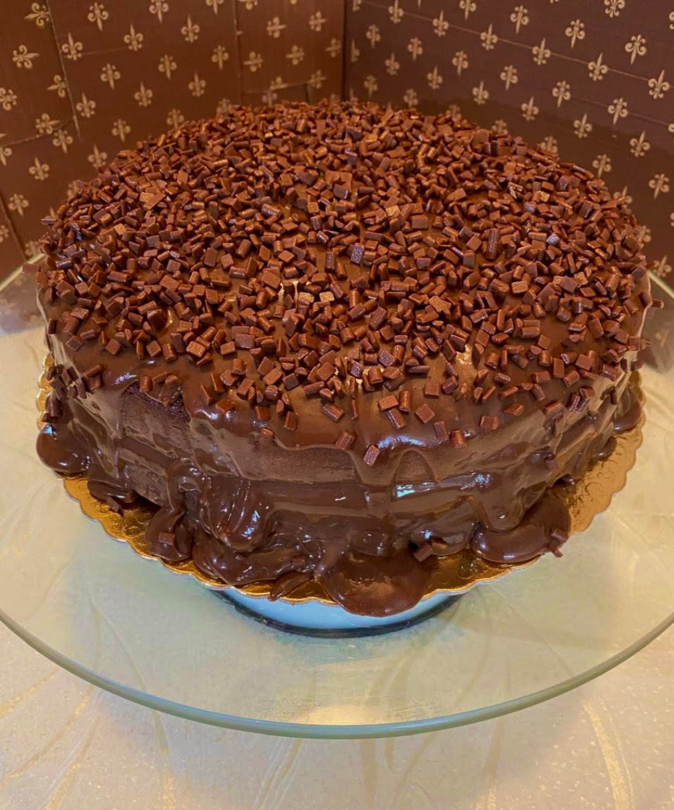
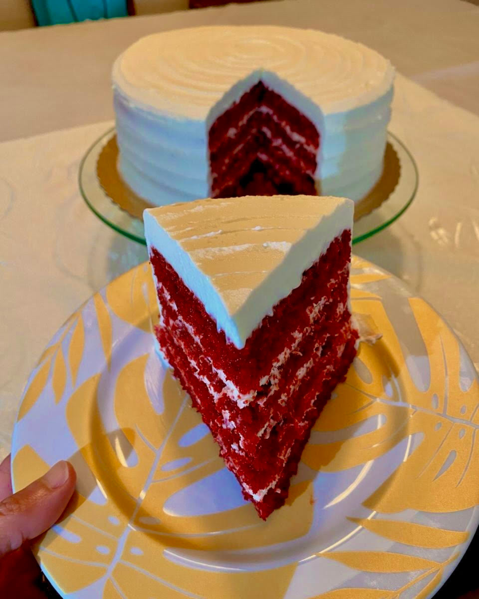
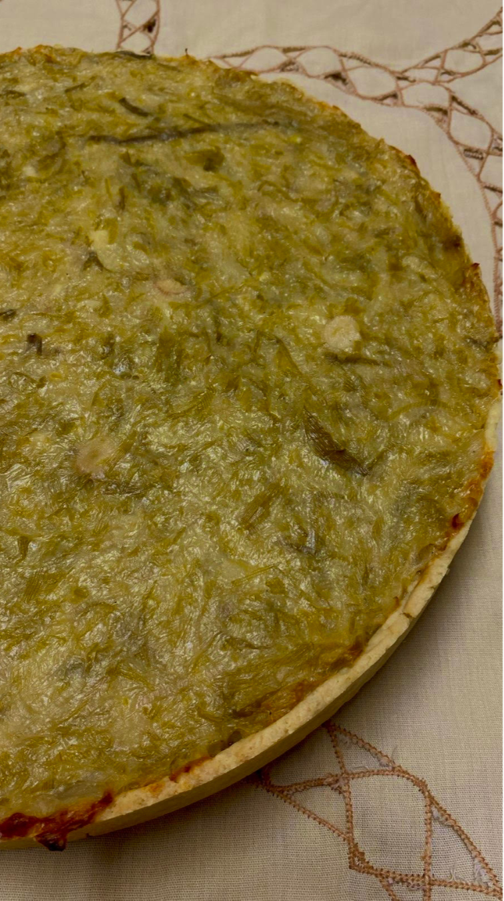
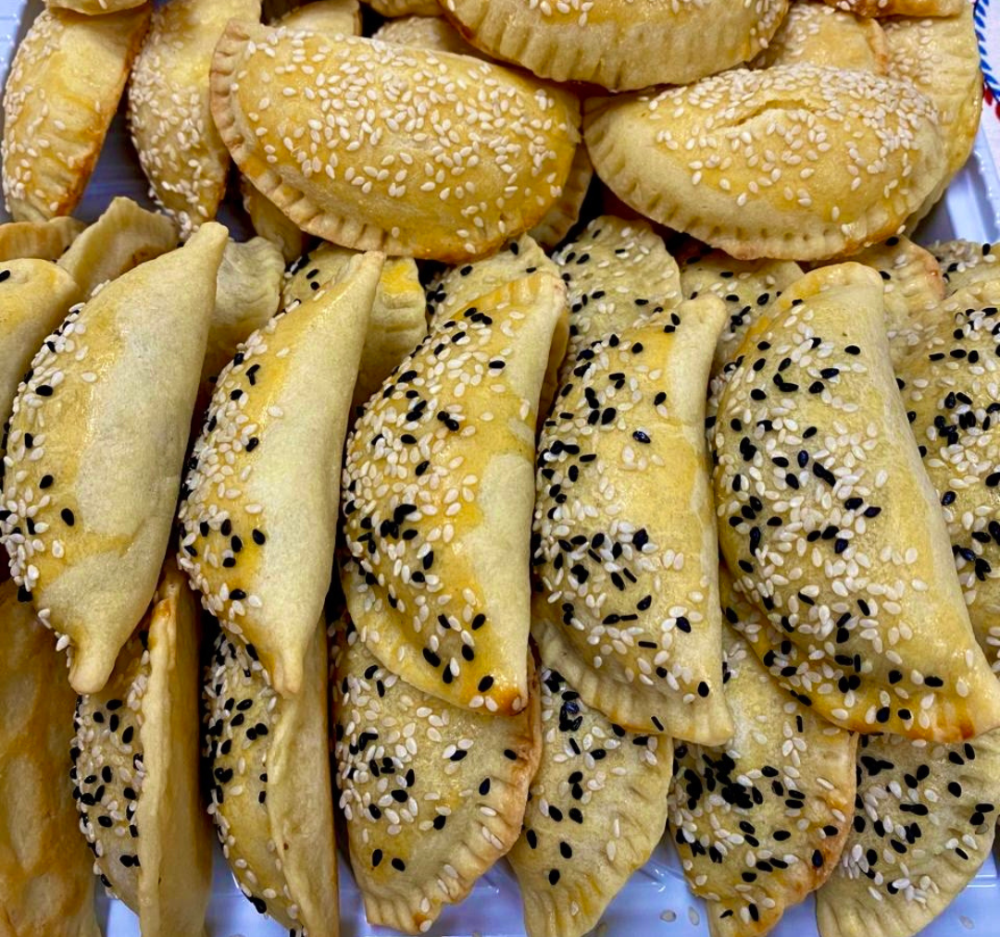
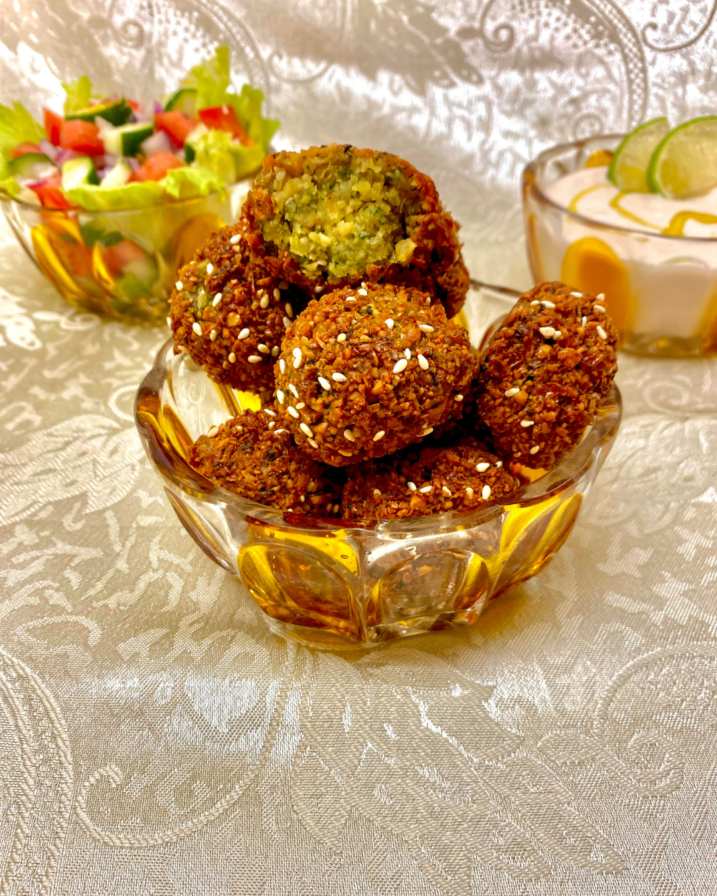
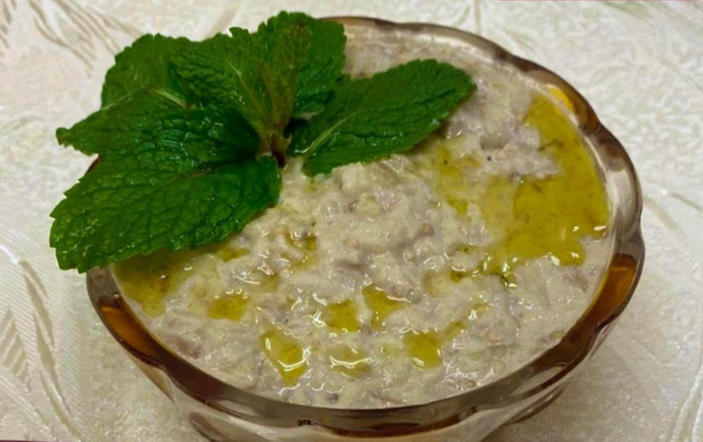
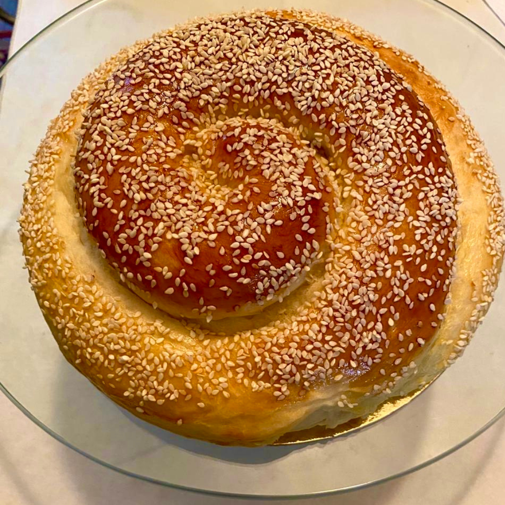
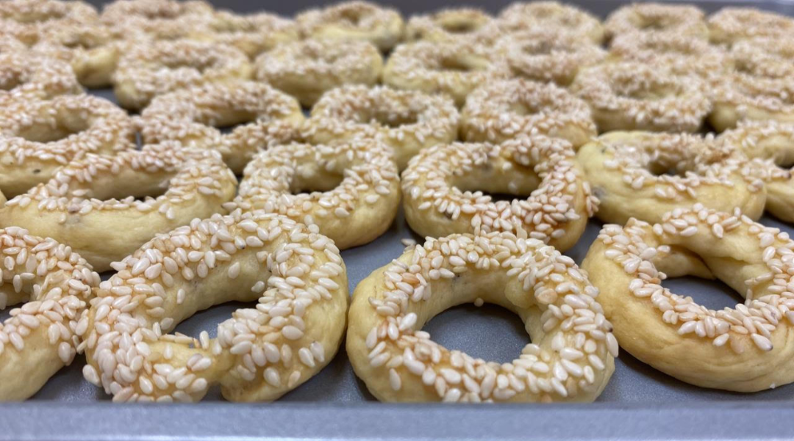
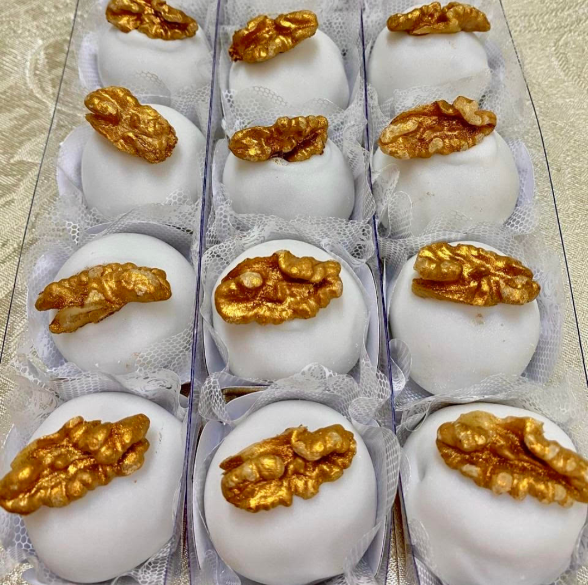
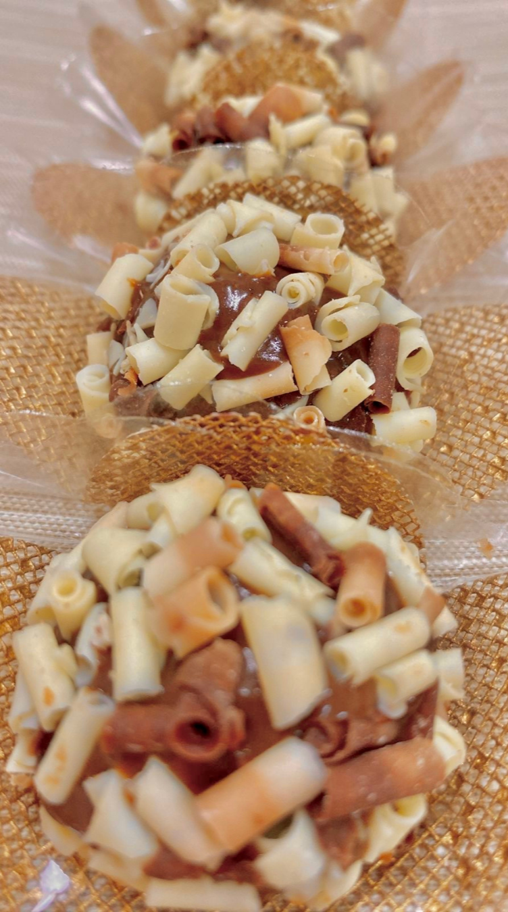

Cardápio de Encomendas
Foi a
que fez
Feito à mão, com amor e receita de família
Bolos · Tortas · Pães · Salgados · Culinária Árabe · Doces
01
Sob encomenda · personalizados para cada ocasião


Todos os sabores de bolo
02
Abertas e fechadas · doces e salgadas

Destaque da Casa
Massa caseira, recheio generoso — abertas ou fechadas, sempre irresistíveis.
Abertas
Fechadas
Strudel
03
Culinária árabe e receitas da casa

Salgados Árabes
Outros
04
Receitas tradicionais com temperos autênticos


Pastas & Entradas
05
Fermentação natural · formatos especiais
Pão Challah
O challah é um pão artesanal de origem judaica, macio e dourado, disponível em quatro formatos diferentes.


Biscoitos
06
Para presentear, servir em eventos ou se mimar


Doces disponíveis
Encomendas pelo WhatsApp
(11) 97822-0896
@foiavaleryquefez
São Paulo, SP
Encomendas com 3 dias de antecedência ou conforme nossa disponibilidade, fale conosco